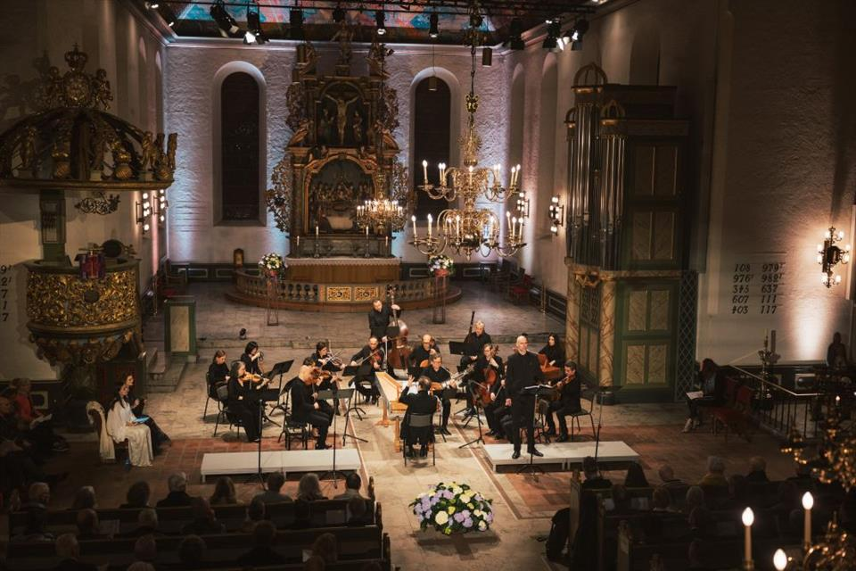
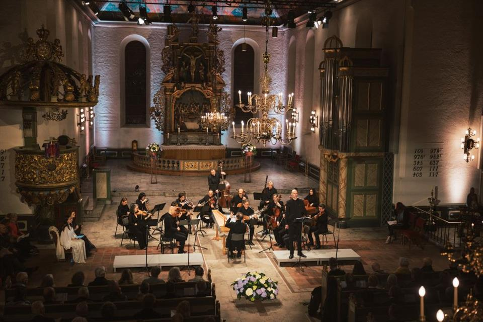

Oslo: Donde la Historia y la Naturaleza se Encuentran
Un Viaje en el Tiempo
Oslo, fundado elrededor del año 1000, es una ciudad en historia y cultura. Con una fascinante herencia vikinga, esta ciudad ha sido testigo de la tranformación Noruega a lo lago de los siglos. Su artquitecturea es una mezcla única entre lo histórico y lo moderno: desde la imponente Fortaleza de Akershus, construida en el siglo XIII, hasta la futurista Ópera de Oslo. Como capital del país, Oslo no solo es el centro político y económico de Noruega, sino también un ejemplo de diseño urbano sostenible y una fuerte conexión con la naturaleza.
Costumbres y Estilo de Vida
Los habitantes de Oslo valoran profundamente la vida al aire libre. Actividades como el senderismo, esquí o paseos en bicicleta son parte integral de la vida cotidiana. Además, lugares como el Parque Vigeland, con sus impresionantes esculturas, invitan a la relajación y el disfrute.
Cultura del Café
La vida en Oslo también está marcada por una fuerte cultura del café,
donde es común ver a los locales disfrutando de un kaffe
en
alguna de las muchas cafeterías acogedoras de la ciudad.
Una Experiencia Inolvidable
Oslo ofrece una combinación única de historia, modernidad y amor por la naturaleza. Ya sea que desees explorar museos como el Museo Munch, disfrutar de su gastronomía o sumergirte en el encanto de sus festivales, esta capital escandinava tiene algo especial para todos. Descubre más sobre Oslo en la guía de turismo. Una experiencia inolvidable te espera en esta joya nórdica.
Festividades

 
